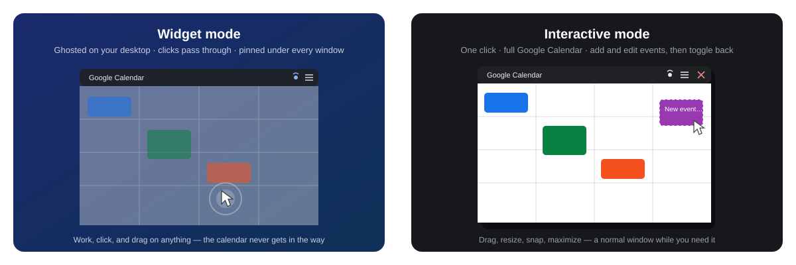

Transparent. Click-through. Always up to date. Never in the way. The real Google Calendar, pinned to your Windows wallpaper.
Free & open source · Windows 10/11 · ~2 MB installer

Stop alt-tabbing to check what's next. Your schedule is always one glance away — and completely out of your way.
Your clicks land on whatever is behind it — desktop icons, files, other apps. The widget is invisible to your mouse.
It is Google Calendar. Add an event from your phone and watch it appear on your desktop seconds later.
One click makes it a normal window: add events, drag meetings around, then fade it back into the wallpaper.
Transparency from 0 to 95 % — from solid window to a ghost that melts into your wallpaper.
Pinned beneath every window. It never pops over your work, never steals focus, never interrupts.
Snap it, maximize it, drag it across monitors like any Windows 11 app. Starts with Windows, lives in the tray.
A mouse icon in the title bar flips between a ghosted widget and a fully interactive calendar.

No account to create, no configuration required.
Grab the ~2 MB installer. It fetches anything else it needs automatically.
Log into your Google account — your session is remembered on your machine.
Hit the mouse button in the title bar. Your calendar fades into the desktop.
Yes — free and open source (Apache 2.0), with no ads, accounts, or telemetry. If you love it, there's an optional donation link. That's it.
No. It's an independent open-source project that displays the real calendar.google.com in its own window. Not affiliated with or endorsed by Google.
The installer isn't code-signed (certificates cost money; this app is free). Click "More info → Run anyway". The full source code is on GitHub, so you can audit or build it yourself.
Only on your machine, in the app's private browser profile — the same way Chrome stores your session. You can sign out (or wipe everything) from the app's settings, and the uninstaller offers to remove all data.
Yes — drag it to any monitor, snap it, or maximize it there. It remembers its position between restarts.
Windows 10 or 11. The installer automatically fetches the .NET 8 runtime and WebView2 (built into Windows 11) if they're missing.
Google Calendar Desktop Widget is free and always will be. If it earns a permanent spot on your desktop, you can fuel its development.
☕ Donate via PayPal